Implementação em Verilog HDL para Tang Nano 9K com geração de amostras, armazenamento em BRAM, processamento aritmético com DSP, controle por FSM, PLL e transmissão dos resultados por UART.
O projeto implementa um monitor de sinal discreto em FPGA. A cada comando de início, o circuito gera 16 amostras signed de 16 bits, armazena o vetor em memória interna, calcula soma, média inteira e RMS simplificado e envia os resultados pela interface digital UART.
| Recurso | Uso no projeto | Montagem externa |
|---|---|---|
| Botão START | Inicia uma nova aquisição após debounce. | Não necessária. |
| Botão RESET | Retorna a FSM ao estado inicial. | Não necessária. |
| LEDs onboard | Indicam estados relevantes da FSM, incluindo IDLE, TX, DONE e ERROR. | Não necessária. |
| USB-UART onboard | Expõe a saída digital em texto ASCII pelo cabo USB. | Não necessária. |
O top level integra clock, botões, LEDs e UART. O núcleo agrupa a FSM, o gerador de amostras, a BRAM, o datapath, o formatador hexadecimal e o transmissor UART. A PLL recebe o clock onboard de 27 MHz e fornece o clock de processamento de 54 MHz.
| Arquivo | Responsabilidade |
|---|---|
| signal_monitor_top.v | Integra PLL, debounce, núcleo, botões, LEDs e UART. |
| signal_monitor_core.v | Implementa a FSM central e coordena memória, datapath e transmissão. |
| sample_generator.v | Gera as 16 amostras signed utilizadas pelo fluxo típico. |
| sample_bram.v | Define a RAM síncrona 16 x 16 com anotação de inferência de BRAM. |
| arithmetic_datapath.v | Acumula soma e soma dos quadrados e registra média e RMS2. |
| hex_result_stream.v | Formata a mensagem ASCII com os resultados em hexadecimal. |
| uart_tx.v | Serializa bytes no formato 115200 baud, 8N1. |
| pll_54mhz.v | Instancia a PLL Gowin em síntese e fornece modelo comportamental em simulação. |
O vetor utilizado como sinal típico foi mantido fixo para permitir conferência direta dos resultados em simulação e em hardware.
[-28, -20, -12, -4, 4, 12, 20, 28, 36, 28, 20, 12, 4, -4, -12, -20]
| Métrica | Decimal | Hexadecimal |
|---|---|---|
| Soma acumulada | 64 | 0x00000040 |
| Média inteira | 4 | 0x00000004 |
| Soma dos quadrados | 5888 | 0x00001700 |
| RMS simplificado (RMS2) | 368 | 0x00000170 |
| Elemento | Implementação | Motivação |
|---|---|---|
| BRAM | RAM síncrona de 16 posições por 16 bits, com syn_ramstyle = "block_ram". |
Demonstrar armazenamento interno e leitura síncrona coordenada pela FSM. |
| DSP | Multiplicação signed sample_in * sample_in, com syn_dspstyle = "dsp". |
Inferir o multiplicador dedicado usado na soma dos quadrados. |
| Acumuladores | Soma signed e acumulador de quadrados com largura suficiente para os extremos testados. | Evitar perda de informação intermediária durante o processamento. |
| PLL | Clock de entrada de 27 MHz e clock derivado de 54 MHz. | Utilizar recurso dedicado da FPGA e separar clock externo de processamento. |
5888 / 16 = 368.
A máquina de estados controla a sequência completa: inicialização, espera, geração, armazenamento, leitura, processamento, formatação, transmissão e indicação final. Há também estado de erro para overflow ou condição inválida.
| Estado | Função |
|---|---|
| INIT | Limpa o datapath e prepara o sistema. |
| IDLE | Aguarda pulso único de START. |
| GENERATE | Seleciona a próxima amostra do gerador interno. |
| STORE | Grava a amostra na BRAM. |
| READ | Aplica endereço para leitura síncrona da BRAM. |
| PROCESS | Acumula a amostra e seu quadrado. |
| FORMAT | Registra os resultados finais e prepara o fluxo ASCII. |
| TX | Transmite a mensagem pela UART. |
| DONE | Mantém indicação visual até um novo START. |
| ERROR | Indica overflow ou erro de controle. |
A interface digital de saída é a UART TX onboard, conectada ao conversor USB-UART/BL702 da placa. Dessa forma, o resultado pode ser capturado no Windows pela porta COM exposta ao conectar a Tang Nano 9K por USB.
DR3_AT N=16 SUM=0x00000040 MEAN=0x00000004 RMS2=0x00000170 DONE
| Sinal | Pino FPGA | Uso |
|---|---|---|
| clk | 52 | Clock onboard de 27 MHz. |
| rst_n | 4 | Botão RESET onboard, ativo em nível baixo. |
| start_n | 3 | Botão START onboard, ativo em nível baixo. |
| uart_tx | 17 | Saída TX para USB-UART onboard. |
| led[0] | 10 | LED de estado onboard. |
| led[1] | 11 | LED de estado onboard. |
| led[2] | 13 | LED de estado onboard. |
| led[3] | 14 | LED de estado onboard. |
| led[4] | 15 | LED de estado onboard. |
| led[5] | 16 | LED de estado onboard. |
Os estados de geração, armazenamento e processamento duram menos de um microssegundo e não são perceptíveis a olho nu. O LED de transmissão pisca por aproximadamente 5,6 ms e, em seguida, o LED de DONE permanece aceso.
A suíte local utiliza Icarus Verilog e cobre o fluxo completo, o datapath
em cenários extremos, a BRAM, a UART, a PLL simulada e o debounce do botão.
O comando executado foi make sim.
| Testbench | Validação |
|---|---|
| tb_signal_monitor_core.v | Fluxo típico completo e métricas finais. |
| tb_extreme_metrics.v | Vetor típico, máximos, mínimos e alternado extremo. |
| tb_bram.v | Escrita e leitura síncrona da memória. |
| tb_uart_results.v | Decodificação serial da mensagem UART. |
| tb_pll_54mhz.v | Lock e clock derivado no modelo de simulação. |
| tb_button_debounce.v | Geração de um único pulso START por acionamento. |
PASS: core typical flow produced SUM=64 MEAN=4 RMS2=368 PASS: datapath typical, extreme and alternating cases PASS: synchronous BRAM write/read PASS: UART transmitted expected metrics string PASS: pll simulation model locked and generated derived clock PASS: debounce generated one start pulse
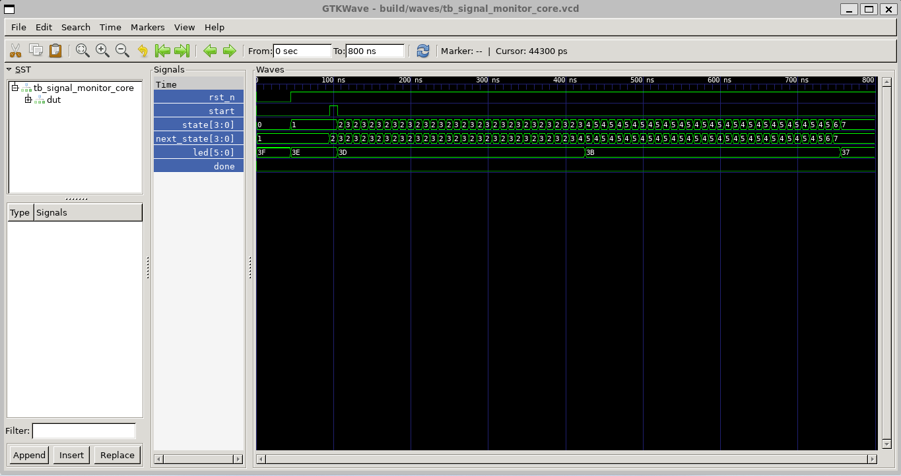
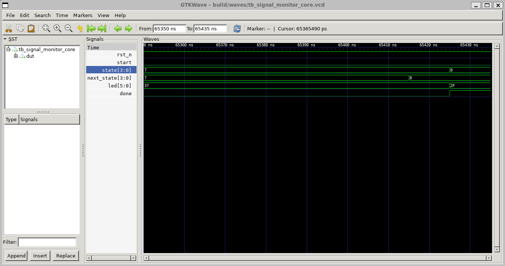
done é ativado e a saída dos LEDs assume o padrão
estável de conclusão.
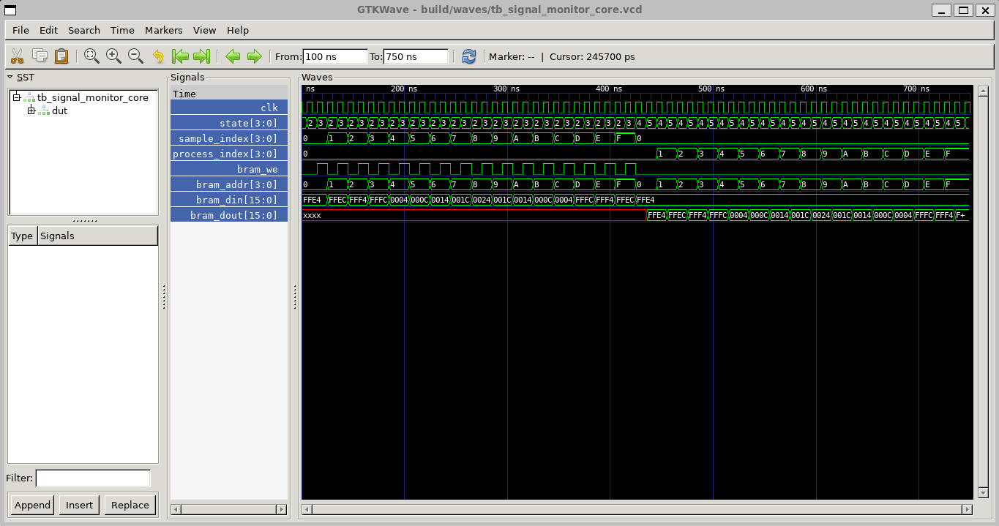
bram_we é ativado e os endereços
avançam de 0 a 15 com os respectivos dados signed. Em READ, a FSM aplica
os endereços novamente para processamento da saída síncrona.
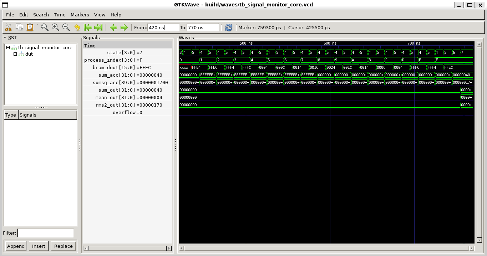
sum_out=0x40, mean_out=0x04 e
rms2_out=0x170. O acumulador de quadrados alcança
0x1700 e overflow permanece desativado.
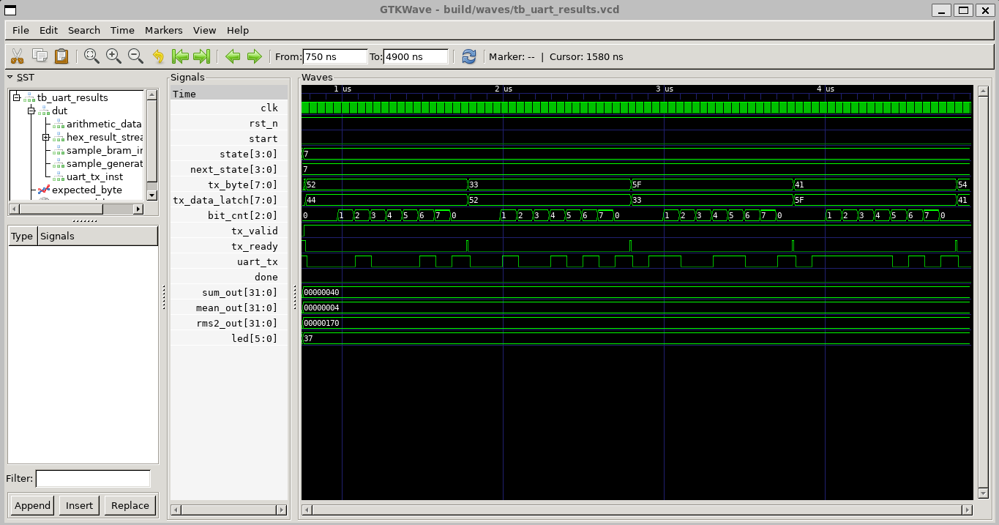
tx_valid, tx_ready,
tx_byte e uart_tx demonstram o handshake e a
serialização dos bytes ASCII. O início da mensagem pode ser lido como
D, R, 3, _ e
A.
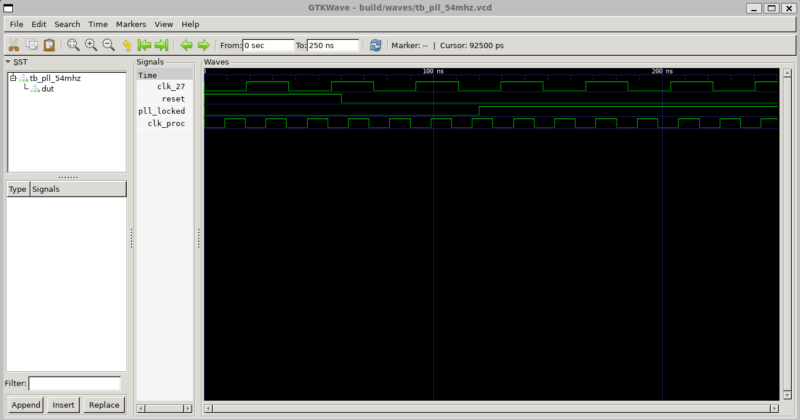
pll_locked é ativado. A comparação
entre clk_27 e clk_proc mostra o clock derivado
de 54 MHz com o dobro da frequência de entrada.
O projeto foi sintetizado e implementado no Gowin EDA para a Tang Nano 9K. O relatório confirma que a codificação inferiu os recursos dedicados previstos: BRAM, multiplicador em DSP e PLL.
| Recurso | Uso | Detalhe |
|---|---|---|
| Lógica | 718 / 8640 (9%) | 644 LUT e 74 ALU. |
| Registradores | 245 / 6693 (4%) | 243 FF lógicos e 2 FF de I/O. |
| BSRAM | 1 / 26 (4%) | 1 memória SP. |
| DSP | 0,5 / 10 (5%) | 1 multiplicador MULT18X18. |
| rPLL | 1 / 2 (50%) | PLL dedicada para clk_proc. |
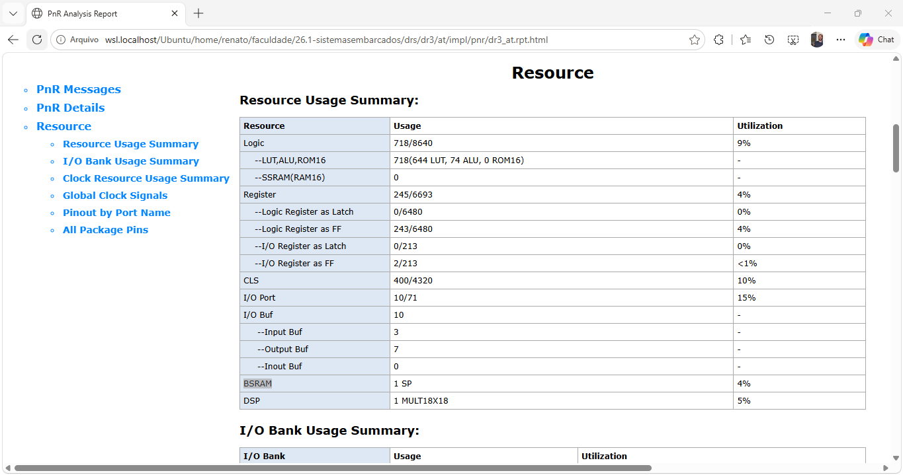
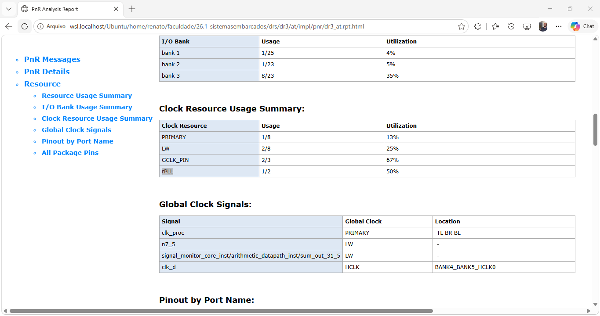
| Arquivo | Finalidade |
|---|---|
| dr3_at.gprj | Projeto para abertura no Gowin EDA. |
| constraints/tangnano9k.cst | Pinagem da Tang Nano 9K. |
| constraints/tangnano9k.sdc | Restrição temporal do clock de entrada. |
| impl/pnr/dr3_at.fs | Bitstream gerado após place-and-route. |
| impl/pnr/dr3_at.rpt.txt | Relatório textual de utilização e pinagem. |
Após programar o bitstream, a placa foi validada usando apenas o cabo USB. A fotografia à esquerda registra o estado IDLE após conexão ou RESET. Após pressionar START, a fotografia à direita registra o LED estável de DONE.
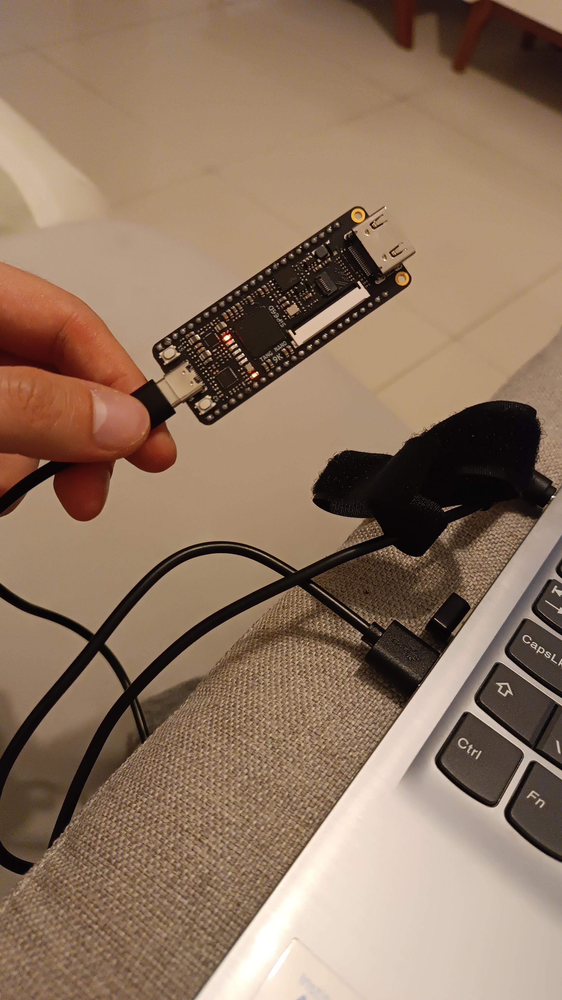
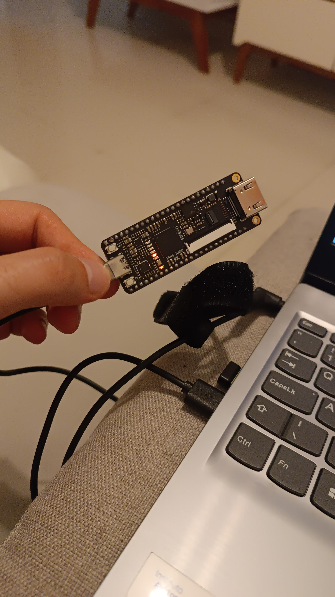
O comportamento visual observado corresponde ao projeto: os estados intermediários são rápidos, o LED de TX aparece brevemente e o LED de DONE permanece aceso ao fim da execução.
A captura foi realizada no PowerShell do Windows, pois a porta COM do USB-UART da placa está exposta ao sistema hospedeiro. Após abrir a porta em 115200 baud e pressionar START, a linha completa foi recebida.
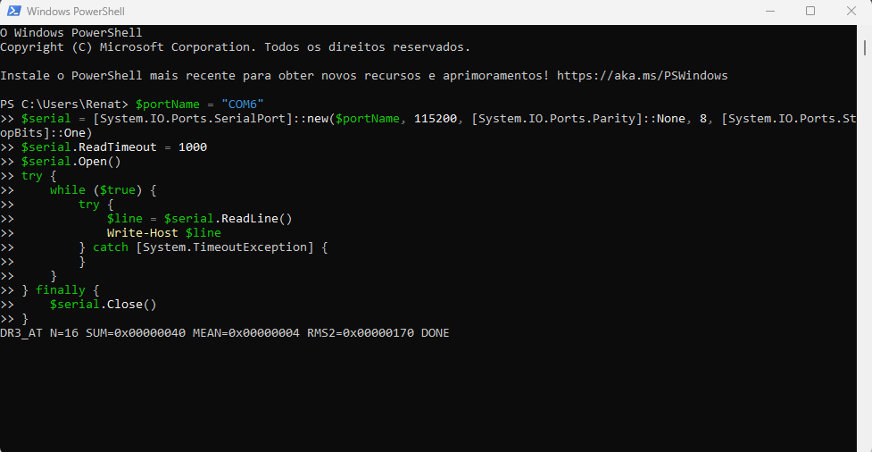
SUM=0x00000040,
MEAN=0x00000004 e RMS2=0x00000170, exatamente
os valores esperados para o vetor típico.
O monitor de sinal discreto foi implementado e validado de ponta a ponta. A solução atende ao fluxo requerido com FSM explícita, memória interna, processamento aritmético, clock derivado e interface digital de saída.
A simulação confirmou o comportamento funcional e os casos extremos. O relatório do Gowin comprovou a inferência de uma BSRAM SP, um multiplicador MULT18X18 em DSP e uma rPLL. Na placa, o acionamento do botão START levou ao estado DONE e a UART onboard transmitiu a linha com soma, média e RMS2 corretos. A montagem final requer somente a Tang Nano 9K conectada por USB.
Relatório gerado em 30 de maio de 2026. Os fontes Mermaid utilizados nos
diagramas estão disponíveis em docs/diagrams/.